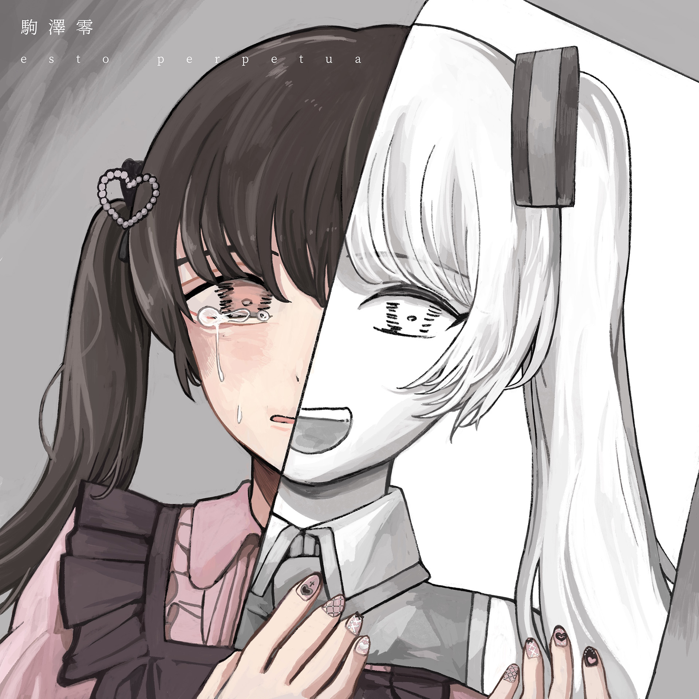

駒澤零 「esto perpetua」
2024/8/23
artwork by 駒澤零
25minute
releases August 24, 2024
artwork by 駒澤零
イラストレーター、レーベルオーナー、オーガナイザー、文筆家など様々な顔を持ち活動する駒澤零が <KAOMOZI> <GoodNews> 両レーベルより初のフルアルバムをリリース。
自身のトラウマの経験から、全曲合成音声の『esto perpetua』とすべて駒澤歌唱の『esto perpetuo』の2枚を同時に発表し、リスナーに歌唱者を選ばせるコンセプトのアルバム。
TRACKS
1. ラブ feat. 足立レイ
2. yumegashima feat. 初音ミク
3. 透明な膜と薄い液体 feat. 初音ミク
4. Starless feat. 初音ミク
5. crayfish feat. 歌愛ユキ
6. 光の綿 feat. 可不
7. フィジカルライツ feat. 初音ミク
8. bios pios feat. 初音ミク
9. my pain feat. 滲音かこい
10. ナラティブ・レクイエム feat. 重音テト、電歌シャー、滲音かこい、ナースロボ_タイプT
詳細: https://lnkfi.re/esto